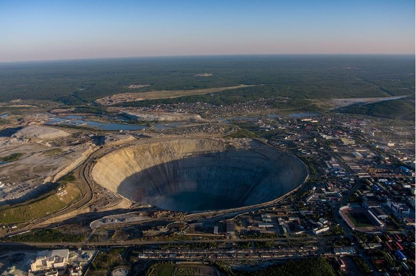
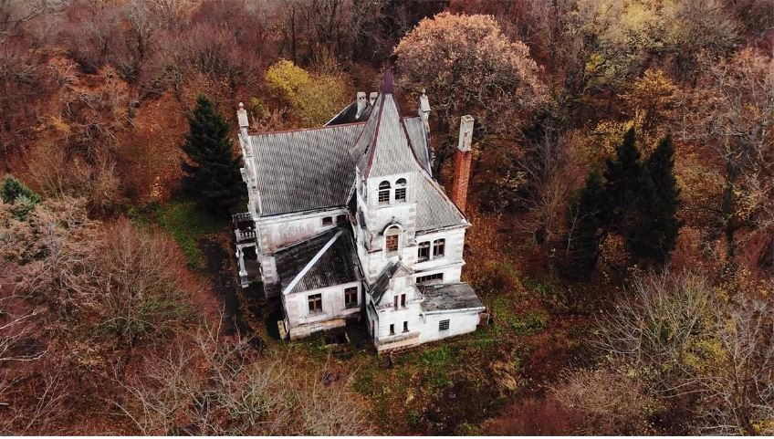

KHÁM PHÁ THẾ GIỚ
Khám phá 10 khu vực bị bỏ hoang kỳ lạ của nước Nga
Tờ RBTH (Nga) mới đây điểm ra 10 khu vực bị bỏ hoang kỳ lạ ở nước Nga, hầu hết hình thành hay ra đời từ thời Liên Xô.
1. Ngôi làng miền núi ở Dagestan

Làng Kahib nằm cách Makhachkala, thủ phủ của Dagestan, 160 km. Ở giữa làng là tàn tích của những công trình bằng đá được xây dựng từ
nhiều thế kỷ trước trên một sườn núi dốc nhìn ra sông Kahibtlar. Những tàn tích này “ăn nhập” với cảnh quan đến mức nhiều người mới
thoáng qua không thể nhận thấy có công trình của con người ở đây.
Tuy nhiên, khi kiểm tra kỹ hơn, một thành phố cũ bị bỏ hoang hiện ra trong vẻ tráng lệ của nó.
Các nhà sử học tin rằng những ngôi nhà và tháp ngắm cảnh này xuất hiện vào thế kỷ 8-10 sau Công nguyên.
Người xưa có thể đã định cư ở khu vực khó tiếp cận này để chống trả những kẻ xâm lược một cách hiệu quả hơn.
2. Kho dự trữ ngũ cốc ở Yaroslavl

Những cấu trúc trông kỳ lạ giống này chẳng qua là tàn tích của ngành nông nghiệp Liên Xô.
Trong thời Xô Viết, những cấu trúc bê tông khổng lồ này được sử dụng để chứa ngũ cốc dự trữ chiến lược và do đó,
được rào chắn và bảo vệ chặt chẽ. Vị trí chính xác của các kho ngũ cốc như thế này thường được giữ bí mậti.
Sau khi Liên Xô sụp đổ, nhiều công trình kiến trúc chiến lược này đã bị bỏ hoang và cuối cùng trở nên đổ nát.
Ngày nay, những tòa tháp bị bỏ hoang này đôi khi thu hút một số du khách tò mò.
3. Một con quái vật nửa tàu-nửa máy bay trên bờ biển Caspi

Chiếc thủy phi cơ kỳ lạ do Liên Xô sản xuất này nằm “nghỉ dưỡng” dài hạn trên bờ biển Caspi ở Dagestan, Nga.
Tàu-máy bay mang tên Lun Ekranoplan từng là một dự án quân sự của LiênXô bị bỏ dở từ cuối thế kỷ 20.
Cỗ máy chiến tranh này được tạo ra với mục đích mang tên lửa hạng nặng đối phó với các hàng không mẫu hạm của Mỹ.
Lun Ekranoplan, ứng dụng hiệu ứng mặt đất, tức là dùng mặt biển làm “điểm tựa”, bay sát mặt nước, do đó có thể tránh được các hệ thống
radar của đối phương.
Tuy nhiên, con tàu-máy bay này chưa từng được sử dụng trong chiến đấu. Sau khi Liên Xô sụp đổ, chiếc thủy phi cơ này bị bỏ rơi,
dự ản bị hủy bỏ.
4. Nghĩa địa tàu ở Murmansk
Để cho "nghỉ hưu" tàu thủy, người Nga đã tạo ra một số "nghĩa địa tàu" ở Bắc Cực và Thái Bình Dương.
Có lẽ nghĩa trang tàu dễ nhận biết nhất nằm gần căn cứ hải quân của Hạm đội phương Bắc của Nga tại Olenya Guba ở vùng Murmansk.
Ở đó, hàng chục tàu đã ngừng hoạt động và thậm chí cả tàu ngầm được cho “nghỉ ngơi vĩnh viễn” sau khi kết thúc nghĩa vụ quân sự.

5. Mỏ kim cương Mir ở Yakutia
Các nhà địa chất Liên Xô đã phát hiện ra trữ lượng kim cương khổng lồ ở Yakutia vào những năm 1950. Truyền thuyết kể rằng,
sau khi phát hiện ra việc này, họ đã gửi một bức điện được mã hóa tới Moscow: “Chúng tôi đã hút đường ống hòa bình. Thuốc lá thật tuyệt ”.
Do đó, tên của hố kim cương ‘Mir’ (tiếng Nga có nghĩa là ‘hòa bình’), được cho là xuất phát từ câu chuyện này.
Hố kim cương Mir trải qua khai thác trở nên ngày càng rộng lớn: sâu hơn 500 mét và đường kính 1.200 mét. Đến một mức độ nào đó,
việc tiếp tục khai thác là rất nguy hiểm và chủ sở hữu đã phải đóng cửa mỏ, chọn một phương pháp mới hơn để khai thác kim cương.

Người ta đã khai thác số kim cương trị giá 17 tỷ USD từ hố lộ thiên khổng lồ này trước khi nó bị bỏ hoang. Trong những năm sau đó,
các kiến trúc sư đã cố gắng tận dụng khu
mỏ lộ thiên này để thiết kế dự án một thành phố trong lòng đất, nhưng kế hoạch của họ đã thất bại và khu mỏ vẫn bị bỏ hoang cho đến ngày nay.
6. Ngọn hải đăng trên đảo Sakhalin
Ngọn hải đăng tuyệt đẹp bị bỏ hoang này đã là một điểm thu hút khách du lịch. Được người Nhật
xây dựng trước những ngày cuối cùng của Thế chiến thứ hai, ngọn hải đăng nằm trên mũi Aniva,
một trong những nơi khó tiếp cận nhất của hòn đảo.

Ngọn hải đăng có thể sớm trở nên nguy đối với du khách, vì nhiều bộ phận của nó đã bắt đầu xuống cấp nghiêm trọng.
7. Thị trấn ma ở Magadan

Thị trấn Kadykchan bị cư dân bỏ hoang sau khi nhà chức trách quyết định đóng cửa các khu mỏ gần đó do xảy ra một vụ tai nạn
tồi tệ khiến 6 công nhân thiệt mạng. Tàn tích của thành phố được xây dựng bởi các tù nhân trong những năm 1940 giống như các trại lính.
Mặc dù người ta thông báo thị trấn không còn dân cư từ năm 2010, nhưng những du khách hiếm hoi cho biết họ đã nhìn thấy một vài cư dân từ
chối rời đi.
8. Máy gia tốc ở vùng Moscow

Vào những năm 1980, các nhà khoa học Liên Xô đã lên kế hoạch chế tạo một máy gia tốc (máy va chạm) khổng lồ để nghiên cứu các vật chất.
Dự án đòi hỏi phải đào bới rất nhiều: những đường hầm khổng lồ được xây dựng bên dưới thành phố Protvino, vùng Matxcova.
Khi dự án bị đình trệ sau khi Liên Xô sụp đổ và tiếp theo là thiếu kinh phí, các đường hầm cũng bị bỏ hoang.
Chúng nằm sâu dưới đất 60 mét và dài hơn 20 km, thu hút những người hâm mộ du lịch công nghiệp, những người ưa khám phá và chấp nhận rủi ro.
9. Nhà máy thủy điện ở Altai

Nhà máy thủy điện Chemalskaya được xây dựng vào năm 1935, nhân công là 700 người tù. Một vụ tai nạn xảy ra vào năm 2010
khiến công trình bị ngập một phần. Kể từ đó, nhà máy ngừng hoạt động. Đôi khi, các nhóm khách du lịch cũng mò đến thăm nhà máy bị bỏ hoang này.
10. Biệt thự Porr ở Primorsk
Có một biệt thự trông đầy ma quái ở thành phố Primorsk ở vùng Kaliningrad. Nó được xây dựng vào năm 1905,
khi thành phố được biết đến với tên tiếng Đức là Fischhausen.

Chủ sở hữu của nó, một doanh nhân thành đạt, đã mua hơn 100 ha đất và xây dựng một dinh thự gồm 13 phòng có tầng hầm và tầng áp mái.
Khi thành phố trở thành lãnh thổ của
Liên Xô sau Thế chiến II, tòa nhà được chuyển giao cho Bộ Quốc phòng Liên Xô và biến thành một viện điều dưỡng, nơi điều trị bệnh lao.
Ngày nay, ngôi biệt thự bị bỏ hoang trông rất kỳ quái, giống như một ngôi biệt thự ma ám trong một bộ phim kinh dị điển hình
NGUYỄN XUÂN THỦY
xe khách
| giữa đường
| ven đường
| liên hoàn
| lên xe
| dúi dụi
| cô gái
| ẩu
| húc
| tai nạn
| bồi thường
TIN KHÁC


 VNEWS
VNEWS